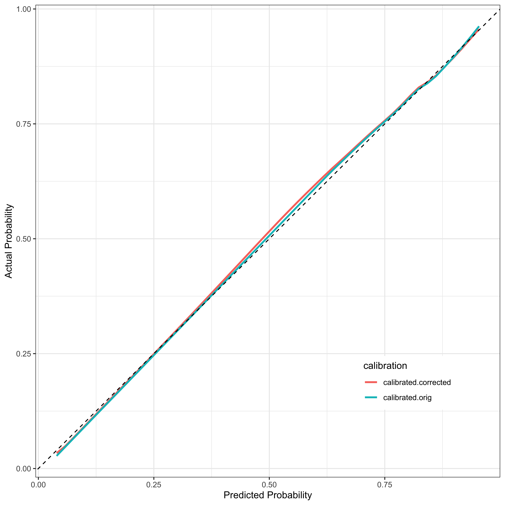

Of the potential patients providing data, what factors were associated with succesful randomization?
Defining compliance as the % of potential study weeks where a patient showed up with a negative test, what factors were associated with higher compliance?
# load data and packagesrequire(tidyverse)
Loading required package: tidyverse
── Attaching core tidyverse packages ──────────────────────── tidyverse 2.0.0 ──
✔ dplyr 1.1.4 ✔ readr 2.1.5
✔ forcats 1.0.0 ✔ stringr 1.5.1
✔ ggplot2 3.5.0 ✔ tibble 3.2.1
✔ lubridate 1.9.3 ✔ tidyr 1.3.1
✔ purrr 1.0.2
── Conflicts ────────────────────────────────────────── tidyverse_conflicts() ──
✖ dplyr::filter() masks stats::filter()
✖ dplyr::lag() masks stats::lag()
ℹ Use the conflicted package (<http://conflicted.r-lib.org/>) to force all conflicts to become errors
require(public.ctn0094data)
Loading required package: public.ctn0094data
require(public.ctn0094extra)
Loading required package: public.ctn0094extra
require(pROC)
Loading required package: pROC
Type 'citation("pROC")' for a citation.
Attaching package: 'pROC'
The following objects are masked from 'package:stats':
cov, smooth, var
require(ggeffects)
Loading required package: ggeffects
require(kableExtra)
Loading required package: kableExtra
Attaching package: 'kableExtra'
The following object is masked from 'package:dplyr':
group_rows
require(broom)
Loading required package: broom
require(rms)
Loading required package: rms
Loading required package: Hmisc
Attaching package: 'Hmisc'
The following objects are masked from 'package:dplyr':
src, summarize
The following objects are masked from 'package:base':
format.pval, units
require(betareg)
Loading required package: betareg
require(scales)
Loading required package: scales
Attaching package: 'scales'
The following object is masked from 'package:purrr':
discard
The following object is masked from 'package:readr':
col_factor
require(emmeans)
Loading required package: emmeans
Attaching package: 'emmeans'
The following object is masked from 'package:rms':
contrast
2 SUCCESSFUL RANDOMIZATION
Of the patients listed in ‘everybody’ which ones are successfully randomized (‘randomization’)?
lrm_final <-lrm(randomization ~pol(age, 2) + marital + total_reported_drugs, randomization_tbl, x =TRUE, y =TRUE, penalty =1)randomization_tbl$predict_randomization <-predict(lrm_final, type ="fitted")cat("\n\n## Project 51 has almost perfect randomization compared to other two\n\n")
## Project 51 has almost perfect randomization compared to other two
cat("\n\n## Use bootstrap validtion to determine what values are persistent\n\n")
## Use bootstrap validtion to determine what values are persistent
coef <-coefficients(lrm_final)se <-sqrt(diag(vcov(lrm_final)))cat("\n\n## Final logistic regression model predicting successful randomization (log-odds)\n\n")
## Final logistic regression model predicting successful randomization (log-odds)
cat("\n\n(factor reference levels based on alphabetical order)\n\n")
(factor reference levels based on alphabetical order)
tibble(term =names(coef), coef, se) %>%mutate(p =2*case_when(coef >0~pnorm(coef / se, lower.tail =FALSE), TRUE~pnorm(coef / se, lower.tail =TRUE))) %>%kable() %>%kable_styling() %>%pack_rows("Marital (ref level Married or Partnered)", 4, 6) %>%pack_rows("Total Reported Drugs (reference level 0)", 7, 11)
term
coef
se
p
Intercept
0.1741456
0.6158886
0.7773647
age
-0.0722803
0.0294367
0.0140707
age^2
0.0005367
0.0003702
0.1471491
Marital (ref level Married or Partnered)
marital=Never married
0.1860933
0.2177973
0.3928649
marital=Separated/Divorced/Widowed
0.2180355
0.2447502
0.3730099
marital=Missing
-0.9700294
0.1860135
0.0000002
Total Reported Drugs (reference level 0)
total_reported_drugs=1
3.8333471
0.2133380
0.0000000
total_reported_drugs=2
3.8023090
0.2102814
0.0000000
total_reported_drugs=3
3.7605650
0.2188092
0.0000000
total_reported_drugs=4
3.9294689
0.2790591
0.0000000
total_reported_drugs=5
3.5772414
0.4260219
0.0000000
calibrate_final <-calibrate(lrm_final, B =200)calibrate_tbl <- calibrate_final[, c("predy", "calibrated.orig", "calibrated.corrected")] %>%as_tibble() %>%pivot_longer(calibrated.orig:calibrated.corrected)cat("\n\n## Show calibration (predicted vs actual) for predictive model of randomization\n\n")
## Show calibration (predicted vs actual) for predictive model of randomization
calibrate_tbl %>%ggplot(aes(x = predy, y = value, color = name)) +geom_line(linewidth =1) +theme_bw() +labs(color ="calibration", x ="Predicted Probability", y ="Actual Probability") +theme(legend.position =c(0.8, 0.2)) +geom_abline(linetype ="dashed")
Warning: A numeric `legend.position` argument in `theme()` was deprecated in ggplot2
3.5.0.
ℹ Please use the `legend.position.inside` argument of `theme()` instead.

auc <-ci.auc(roc(randomization ~ predict_randomization, data = randomization_tbl %>%filter(!is.na(predict_randomization))))
Setting levels: control = 0, case = 1
Setting direction: controls < cases
cat(sprintf("\n\n## ROC curve AUC is %0.2f (95 percent CI %0.2f - %0.2f), \n\n", auc[2], auc[1], auc[3]))
## ROC curve AUC is 0.81 (95 percent CI 0.79 - 0.83),
plot(roc(randomization ~ predict_randomization, data = randomization_tbl %>%filter(!is.na(predict_randomization))))
Setting levels: control = 0, case = 1
Setting direction: controls < cases
This adapts the code from ‘public.ctn0094extra’ vignette to summarise substance use across weeks.
I define compliance as how many times the patient showed up with a negative UDS report, divided by the length of time in the study (Study Week + 1 for Baseline). Attendance is how many times the patient showed up with a report (positive or negative), divided by length of time in the study.
Beta regression is used to create a parsimonious model, pruned “by hand” to get rid of irrelevant predictors. The correlation coefficients for these models are not good (R-squared < 0.03) but there may be some insight into how to get better attendance or compliance for patients
data_ls <-loadRawData(c("randomization", "treatment"))data_ls$randomization <- data_ls$randomization %>%select(who, when, treatment, randomized = which) %>%# Remove second randomization eventsfilter(randomized !=2)data_ls$treatment <- data_ls$treatmentstart_int <-c(`27`=-30L, `51`=-30L)end_int <-c(`27`= 168L, `51`= 168L)backbone2751_df <-CreateProtocolHistory(start_vec = start_int,end_vec = end_int )backbone30_df <- randomization %>%full_join(everybody, by ="who") %>%filter(project =="30") %>%CreateCTN30ProtocolHistory() %>%mutate(project ="30") %>%select(who, project, when)backbone_df <-bind_rows(backbone2751_df, backbone30_df) %>%arrange(who)rm(backbone2751_df, backbone30_df, start_int, end_int)data_ls <-loadRawData(c("randomization", "visit"))data_ls$randomization <- data_ls$randomization %>%select(who, when, treatment, randomized = which) %>%# Remove second randomization eventsfilter(randomized !=2)data_ls$visit <- data_ls$visittimelineRand1_df <- data_ls$randomization %>%mutate(randomized = randomized =="1") %>%# Join to backbone and arrange within subject by dayfull_join(backbone_df, by =c("who", "when")) %>%group_by(who) %>%arrange(when, .by_group =TRUE) %>%select(who, project, when, randomized)timelineVisit1_df <- data_ls$visit %>%select(who, when, visit, status = what) %>%filter(status %in%c("visit", "final")) %>%mutate(visit =TRUE) %>%select(who, when, visit) %>%left_join(timelineRand1_df, ., by =c("who", "when")) %>%distinct()timelineMissing1_df <-MarkMissing(timelineVisit1_df)derived_visitImputed <- timelineMissing1_df %>%mutate(visit =as.character(visit)) %>%replace_na(list(visit ="", visitYM ="")) %>%mutate(visitImputed =paste0(visit, visitYM)) %>%mutate(visitImputed =str_replace( visitImputed,pattern ="TRUETRUE", replacement ="Present" ) ) %>%select(who, when, visitImputed) %>%filter(visitImputed !="") %>%ungroup()randomized_df <- randomization %>%mutate(randomized =as.integer(as.character(which))) %>%select(who, when, randomized) %>%left_join(everybody, by ="who") %>%filter(!(randomized ==2& project %in%c("27", "51"))) %>%select(-project)udsUse2_df <- backbone_df %>%left_join(randomized_df, by =c("who", "when")) %>%left_join(derived_visitImputed, by =c("who", "when")) %>%left_join(uds, by =c("who", "when")) %>%# So we can use MarkUse() with UDS data (instead of all_drugs)mutate(source ="UDS")rm( backbone_df, data_ls, timelineMissing1_df, timelineRand1_df, timelineVisit1_df)nonStudyOpioids_ls <-list("Buprenorphine"=c("Opioid", "Methadone"),"Methadone"=c("Opioid", "Buprenorphine"),"Naltrexone"=c("Opioid", "Methadone", "Buprenorphine"),"Not treated"=c("Opioid", "Methadone", "Buprenorphine"))treatGroups_ls <- randomization %>%filter(which ==1) %>%left_join(everybody, by ="who") %>%select(who, treatment) %>%mutate(treat_drug =case_when(str_detect(treatment, "BUP") ~"Buprenorphine", treatment =="Methadone"~"Methadone", treatment =="Inpatient NR-NTX"~"Naltrexone" ) ) %>%select(-treatment) %>%split(f = .$treat_drug) %>%map(.f ="who")opioidUse_df <- udsUse2_df %>%mutate(treat_group =case_when( who %in% treatGroups_ls$Buprenorphine ~"Buprenorphine", who %in% treatGroups_ls$Methadone ~"Methadone", who %in% treatGroups_ls$Naltrexone ~"Naltrexone",TRUE~"Not treated" ) ) %>%split(f = .$treat_group) %>%# List of data in alphabetical order, so the non-study drugs ls should matchmap2(.y = nonStudyOpioids_ls,.f =~ {# REQUIRES "source" COLUMNMarkUse(targetDrugs_char = .y,drugs_df = .x,# because we have participants with no recorded UDS; in practice DO NOT# use this commandretainEmptyRows =TRUE ) } ) %>%bind_rows() %>%mutate(udsOpioid =case_when(is.na(when) ~NA,!is.na(when) ~TRUE ) ) %>%select(who, when, udsOpioid)
Warning: The following drugs were not matched: Buprenorphine. Please check for
possible spelling/capitalization errors.
Warning: The following drugs were not matched: Buprenorphine. Please check for
possible spelling/capitalization errors.
timelineUDS_df <- udsUse2_df %>%left_join(opioidUse_df, by =c("who", "when")) %>%select(-what, -source) %>%# 2,089 rows to 1,994distinct()rm( derived_visitImputed, opioidUse_df, randomized_df, treatGroups_ls, udsUse2_df)wasRandomized_int <- timelineUDS_df %>%group_by(who) %>%summarise(randomized =any(randomized %in%1:2)) %>%filter(randomized) %>%pull(who)notRandomized_int <- timelineUDS_df %>%filter(!(who %in% wasRandomized_int)) %>%pull(who) %>%unique()timelineUDS2_df <- timelineUDS_df %>%filter(who %in% wasRandomized_int) %>%group_by(who) %>%filter(!is.na(randomized)) %>%mutate(whenRandomized1 =case_when(randomized ==1~ when),whenRandomized2 =case_when(randomized ==2~ when) ) %>%select(who, when, whenRandomized1, whenRandomized2) %>%left_join(timelineUDS_df, ., by =c("who", "when")) %>%filter(who %in% wasRandomized_int) %>%# Add back in the groupings BEFORE the fill()group_by(who) %>%fill(whenRandomized1, .direction ="updown") %>%fill(whenRandomized2, .direction ="updown") %>%mutate(daysSinceRand1 = when - whenRandomized1) %>%mutate(daysSinceRand2 = when - whenRandomized2) %>%select(-whenRandomized1, -whenRandomized2)weeklyUse_df <- timelineUDS2_df %>%# The (daysSinceRand1 - 1) adjustment is to ensure that the first study week# is a full 7 days, since "day 0" is the day before randomization. The "+1"# at the end is to shift the study week label such that "week 0" is the# week *BEFORE* treatment, rather than the first week of treatment. So, the# randomization day is the last day of "week 0" (the pre-treatment period).mutate(studyWeek1 = (daysSinceRand1 -1) %/%7+1) %>%mutate(studyWeek2 = (daysSinceRand2 -1) %/%7+1) %>%group_by(who, studyWeek1) %>%# There are some study weeks with multiple UDS, so we count the number of# positive and negative UDS per week.summarise(nPosUDS =sum(udsOpioid ==1, na.rm =TRUE),nNegUDS =sum(visitImputed =="Present"&is.na(udsOpioid), na.rm =TRUE),nMissing =sum(visitImputed =="Missing", na.rm =TRUE),randWk1 =sum(randomized ==1, na.rm =TRUE) >0,randWk2 =sum(randomized ==2& project =="30", na.rm =TRUE) >0 ) %>%ungroup()
`summarise()` has grouped output by 'who'. You can override using the `.groups`
argument.
useByWeekRandomized_df <- weeklyUse_df %>%mutate(udsStatus =case_when(# If we see a positive UDS and no negative UDS, it's positive nPosUDS >0& nNegUDS ==0~"+",# If we see a negative UDS and no positive UDS, it's negative nPosUDS ==0& nNegUDS >0~"-",# If we see both positive and negative UDS in a single week, it's both# (note that we can recode all "B"s to be "+" as necessary) nPosUDS >0& nNegUDS >0~"*",# If we don't have any UDS in a week after randomization, it's missing# UPDATE 2022-03-08: I had this as a 0 originally, and I was using this# in context of consent, not randomization. This was wrong. nPosUDS ==0& nNegUDS ==0& studyWeek1 >=1~"o",# If none of the above are true, but we still have a missing value as# marked by the MarkMissing() function, then it's missing nMissing >0~"o",# If none of the above conditions are true (probably because it's a week# before randomization but not during a baseline visit for consent),# then leave it blank (pre-study)TRUE~"_" ) ) %>%group_by(who) %>%# For CTN-0030, Phase II could have started on any day of the week, even in# the middle of a treatment week. If we try to start counting Phase II# weeks the day after treatment arms are switched, we can end up with the# last "week" of Phase I not having 7 days. I'm going to leave the first# week of Phase II as whatever week the switch happened in.mutate(rand1Active = studyWeek1 >0,# This returns 0 for any week before the Phase II randomization, and 1 for# the Phase II randomization week and all subsequent weeks (because the# randWk2 column is 1 only for the week of second randomization and 0# all other rows).rand2Active =cumsum(randWk2),trialPhase = rand1Active + rand2Active ) %>% dplyr::select( who,studyWeek = studyWeek1, randWk1, randWk2, udsStatus, trialPhase )#### NEWcompliance_results <- useByWeekRandomized_df %>%filter(trialPhase ==1) %>%filter(studyWeek >=0) %>%inner_join(everybody) %>%group_by(project, who) %>%summarise(sum_pos =sum(udsStatus =="+"), sum_neg =sum(udsStatus =="-"), sumMissing =sum(udsStatus =="o"), total_weeks =1+max(studyWeek)) %>%mutate(compliance = sum_neg / total_weeks, attendance = (sum_neg+sum_pos)/total_weeks) %>%inner_join(randomization_tbl %>% dplyr::select(who, age, is_hispanic, race, job, education, is_living_stable, marital, is_male, cocaine:total_reported_drugs, predict_randomization)) %>%mutate(project=as.factor(project))
Joining with `by = join_by(who)`
`summarise()` has grouped output by 'project'. You can override using the
`.groups` argument.
Joining with `by = join_by(who)`
Warning in betareg.fit(X, Y, Z, weights, offset, link, link.phi, type,
control): no valid starting value for precision parameter found, using 1
instead
Warning in betareg.fit(X, Y, Z, weights, offset, link, link.phi, type,
control): no valid starting value for precision parameter found, using 1
instead
cat("\n\n## Beta regression coefficients (factor reference levels based on alphabetical order)\n\n")
## Beta regression coefficients (factor reference levels based on alphabetical order)
cat("\n\n### Compliance\n\n")
### Compliance
tidy(beta_compliance_red) %>% dplyr::select(-statistic) %>%kable() %>%kable_styling() %>%pack_rows("Race (reference level Black)", 3, 5) %>%pack_rows("job (reference level Full Time)", 6, 10) %>%pack_rows("Marital (ref level Married or Partnered)", 11, 13)
component
term
estimate
std.error
p.value
mean
(Intercept)
-1.4656202
0.1722355
0.0000000
mean
age
0.0077218
0.0025338
0.0023075
Race (reference level Black)
mean
raceOther
-0.0000154
0.1035300
0.9998809
mean
raceRefused/missing
-0.1131639
0.3348571
0.7354034
mean
raceWhite
0.1482887
0.0878694
0.0914874
job (reference level Full Time)
mean
jobOther
0.3114931
0.1846286
0.0915776
mean
jobPart Time
-0.1640795
0.0855055
0.0549926
mean
jobStudent
-0.2596616
0.1956821
0.1845232
mean
jobUnemployed
0.0299534
0.0846908
0.7235793
mean
jobMissing
-0.5690129
0.6021055
0.3446392
Marital (ref level Married or Partnered)
mean
maritalNever married
0.2686716
0.0884782
0.0023927
mean
maritalSeparated/Divorced/Widowed
0.2431355
0.1008997
0.0159667
mean
maritalMissing
0.5755636
0.6054473
0.3417862
mean
heroin1
-0.1291437
0.0619663
0.0371516
mean
opioid1
0.2627274
0.0567428
0.0000037
precision
(phi)
1.2804061
0.0325090
0.0000000
cat("\n\n### No major difference between Projects\n\n")
### No major difference between Projects
cat("\n\nUpdate models by adding project and look for marginal means between projects\n\n")
Update models by adding project and look for marginal means between projects
Warning in betareg.fit(X, Y, Z, weights, offset, link, link.phi, type,
control): no valid starting value for precision parameter found, using 1
instead
project
predicted
conf.low
conf.high
27
0.4234444
0.3310894
0.5157993
30
0.4437619
0.3556613
0.5318625
51
0.4345425
0.3448335
0.5242516
cat("\n\n### Attendance\n\n")
### Attendance
tidy(beta_attendance_red) %>% dplyr::select(-statistic) %>%kable() %>%kable_styling() %>%pack_rows("Job (reference level Full Time)", 3, 7) %>%pack_rows("Is living stable (reference level No)", 8, 9) %>%pack_rows("Marital (ref level Married or Partnered)", 10, 12)
Analyses of the data indicate that the age of the participant is the most important factor for both successful randomization and higher attendance/compliance, however the effects go in opposite directions:
For randomization, the probability of enrollment is lower with increasing age.
Once randomized, the rates of attendance and compliance goe up with increasing age.
For randomization, the other predictors are the total reported drugs and martial status, but in both cases missing is the most important factor – and there, lack of reported data (indicating unwillingness to participate by reporting data?) indicates lower probability of being randomized. The predictive power of this model is quite strong (AUC 0.8, linear calibration curve).
For compliance and attendance, the predictive power of models are lower. Age remains the most powerful predictor, while other predictors appear to be race, job, marital status, and heroin and opioid.
Source Code
---title: "R Medicine Opioid competition"author: "Mitchell Maltenfort"number-sections: TRUEfig-height: 8fig-width: 8fig-dpi: 300---# INTRODUCTIONThis is my attempt at the analyses requested in <https://rconsortium.github.io/RMedicine_website/Competition.html>. I focused on identifying predictive factors associated with two questions.1. Of the potential patients providing data, what factors were associated with succesful randomization?2. Defining compliance as the % of potential study weeks where a patient showed up with a negative test, what factors were associated with higher compliance?```{r setup}# load data and packagesrequire(tidyverse)require(public.ctn0094data)require(public.ctn0094extra)require(pROC)require(ggeffects)require(kableExtra)require(broom)require(rms)require(betareg)require(scales)require(emmeans)```# SUCCESSFUL RANDOMIZATIONOf the patients listed in 'everybody' which ones are successfully randomized ('randomization')?```{r randomization}# create wide table of drug usgerbs_wide <- rbs %>%mutate(value =case_when(did_use =="Yes"~1, did_use =="No"~0)) %>% dplyr::select(who, what, value) %>%right_join(everybody %>% dplyr::select(who)) %>%mutate(value =case_when(is.na(value) ~0, TRUE~ value)) %>%pivot_wider(names_from = what, values_fill =0) %>%mutate(total_reported_drugs = cocaine + heroin + speedball + opioid + speed) %>% dplyr::select(-`NA`) %>%mutate(total_reported_drugs =as.factor(total_reported_drugs))randomization_tbl <- demographics %>%left_join(randomization %>%filter(which ==1)) %>%mutate(randomization =as.factor(case_when(is.na(which) ~"0", TRUE~ which))) %>%inner_join(rbs_wide) %>%mutate(job =as.factor(case_when(is.na(job) ~"Missing", TRUE~ job))) %>%mutate(is_living_stable =as.factor(case_when(is.na(is_living_stable) ~"Missing", TRUE~ is_living_stable))) %>%mutate(education =as.factor(case_when(is.na(education) ~"Missing", TRUE~ education))) %>%mutate(marital =as.factor(case_when(is.na(marital) ~"Missing", TRUE~ marital))) %>%mutate(job =fct_relevel(job, "Missing", after =Inf)) %>%mutate(is_living_stable =fct_relevel(is_living_stable, "Missing", after =Inf)) %>%mutate(education =fct_relevel(education, "Missing", after =Inf)) %>%mutate(marital =fct_relevel(marital, "Missing", after =Inf)) %>%mutate(cocaine =as.factor(cocaine), heroin =as.factor(heroin), speedball =as.factor(speedball), opioid =as.factor(opioid), speed =as.factor(speed)) %>%inner_join(everybody)# use optimum penalty of 1 determined manually using 'pentrace'lrm_randomization <-lrm(randomization ~pol(age, 2) + job + education + marital + is_male + is_hispanic + race + total_reported_drugs + heroin + speedball + opioid, randomization_tbl, x =TRUE, y =TRUE, penalty =1)cat("\n\n## Use bootstrap validation to determine what values are persistent\n\n")cat("\n\n'Total reported drugs' is cocaine + speed + speedball + opioid + heroin as 0/1 from rbs\n\n")validate_randomization <-validate(lrm_randomization, B =200, bw =TRUE)summary(attr(validate_randomization, "kept")) %>%kable() %>%kable_styling()lrm_final <-lrm(randomization ~pol(age, 2) + marital + total_reported_drugs, randomization_tbl, x =TRUE, y =TRUE, penalty =1)randomization_tbl$predict_randomization <-predict(lrm_final, type ="fitted")cat("\n\n## Project 51 has almost perfect randomization compared to other two\n\n")ggemmeans(update(lrm_final,.~.+project),"project") %>%as.data.frame() %>% dplyr::select(project=x, predicted, conf.low, conf.high) %>%kable() %>%kable_styling()cat("\n\n## Use bootstrap validtion to determine what values are persistent\n\n")coef <-coefficients(lrm_final)se <-sqrt(diag(vcov(lrm_final)))cat("\n\n## Final logistic regression model predicting successful randomization (log-odds)\n\n")cat("\n\n(factor reference levels based on alphabetical order)\n\n")tibble(term =names(coef), coef, se) %>%mutate(p =2*case_when(coef >0~pnorm(coef / se, lower.tail =FALSE), TRUE~pnorm(coef / se, lower.tail =TRUE))) %>%kable() %>%kable_styling() %>%pack_rows("Marital (ref level Married or Partnered)", 4, 6) %>%pack_rows("Total Reported Drugs (reference level 0)", 7, 11)calibrate_final <-calibrate(lrm_final, B =200)calibrate_tbl <- calibrate_final[, c("predy", "calibrated.orig", "calibrated.corrected")] %>%as_tibble() %>%pivot_longer(calibrated.orig:calibrated.corrected)cat("\n\n## Show calibration (predicted vs actual) for predictive model of randomization\n\n")calibrate_tbl %>%ggplot(aes(x = predy, y = value, color = name)) +geom_line(linewidth =1) +theme_bw() +labs(color ="calibration", x ="Predicted Probability", y ="Actual Probability") +theme(legend.position =c(0.8, 0.2)) +geom_abline(linetype ="dashed")auc <-ci.auc(roc(randomization ~ predict_randomization, data = randomization_tbl %>%filter(!is.na(predict_randomization))))cat(sprintf("\n\n## ROC curve AUC is %0.2f (95 percent CI %0.2f - %0.2f), \n\n", auc[2], auc[1], auc[3]))plot(roc(randomization ~ predict_randomization, data = randomization_tbl %>%filter(!is.na(predict_randomization))))cat("\n\n")cat("\n\n## Estimated marginal means\n\n")cat("\n\n### Marital\n\n")plot(ggemmeans(lrm_final, "marital"))cat("\n\n")test_predictions(lrm_final, "marital") %>%kable() %>%kable_styling()cat("\n\n### Total reported drugs\n\n")plot(ggemmeans(lrm_final, "total_reported_drugs"))cat("\n\n")test_predictions(lrm_final, "total_reported_drugs") %>%kable() %>%kable_styling()cat("\n\n### Age\n\n")plot(ggemmeans(lrm_final, "age[all]"))```# ATTENDANCE AND COMPLIANCE POST-RANDOMIZATIONThis adapts the code from 'public.ctn0094extra' vignette to summarise substance use across weeks.I define compliance as how many times the patient showed up with a negative UDS report, divided by the length of time in the study (Study Week + 1 for Baseline). Attendance is how many times the patient showed up with a report (positive or negative), divided by length of time in the study.Beta regression is used to create a parsimonious model, pruned "by hand" to get rid of irrelevant predictors. The correlation coefficients for these models are not good (R-squared \< 0.03) but there may be some insight into how to get better attendance or compliance for patients```{r compliance}data_ls <-loadRawData(c("randomization", "treatment"))data_ls$randomization <- data_ls$randomization %>%select(who, when, treatment, randomized = which) %>%# Remove second randomization eventsfilter(randomized !=2)data_ls$treatment <- data_ls$treatmentstart_int <-c(`27`=-30L, `51`=-30L)end_int <-c(`27`= 168L, `51`= 168L)backbone2751_df <-CreateProtocolHistory(start_vec = start_int,end_vec = end_int )backbone30_df <- randomization %>%full_join(everybody, by ="who") %>%filter(project =="30") %>%CreateCTN30ProtocolHistory() %>%mutate(project ="30") %>%select(who, project, when)backbone_df <-bind_rows(backbone2751_df, backbone30_df) %>%arrange(who)rm(backbone2751_df, backbone30_df, start_int, end_int)data_ls <-loadRawData(c("randomization", "visit"))data_ls$randomization <- data_ls$randomization %>%select(who, when, treatment, randomized = which) %>%# Remove second randomization eventsfilter(randomized !=2)data_ls$visit <- data_ls$visittimelineRand1_df <- data_ls$randomization %>%mutate(randomized = randomized =="1") %>%# Join to backbone and arrange within subject by dayfull_join(backbone_df, by =c("who", "when")) %>%group_by(who) %>%arrange(when, .by_group =TRUE) %>%select(who, project, when, randomized)timelineVisit1_df <- data_ls$visit %>%select(who, when, visit, status = what) %>%filter(status %in%c("visit", "final")) %>%mutate(visit =TRUE) %>%select(who, when, visit) %>%left_join(timelineRand1_df, ., by =c("who", "when")) %>%distinct()timelineMissing1_df <-MarkMissing(timelineVisit1_df)derived_visitImputed <- timelineMissing1_df %>%mutate(visit =as.character(visit)) %>%replace_na(list(visit ="", visitYM ="")) %>%mutate(visitImputed =paste0(visit, visitYM)) %>%mutate(visitImputed =str_replace( visitImputed,pattern ="TRUETRUE", replacement ="Present" ) ) %>%select(who, when, visitImputed) %>%filter(visitImputed !="") %>%ungroup()randomized_df <- randomization %>%mutate(randomized =as.integer(as.character(which))) %>%select(who, when, randomized) %>%left_join(everybody, by ="who") %>%filter(!(randomized ==2& project %in%c("27", "51"))) %>%select(-project)udsUse2_df <- backbone_df %>%left_join(randomized_df, by =c("who", "when")) %>%left_join(derived_visitImputed, by =c("who", "when")) %>%left_join(uds, by =c("who", "when")) %>%# So we can use MarkUse() with UDS data (instead of all_drugs)mutate(source ="UDS")rm( backbone_df, data_ls, timelineMissing1_df, timelineRand1_df, timelineVisit1_df)nonStudyOpioids_ls <-list("Buprenorphine"=c("Opioid", "Methadone"),"Methadone"=c("Opioid", "Buprenorphine"),"Naltrexone"=c("Opioid", "Methadone", "Buprenorphine"),"Not treated"=c("Opioid", "Methadone", "Buprenorphine"))treatGroups_ls <- randomization %>%filter(which ==1) %>%left_join(everybody, by ="who") %>%select(who, treatment) %>%mutate(treat_drug =case_when(str_detect(treatment, "BUP") ~"Buprenorphine", treatment =="Methadone"~"Methadone", treatment =="Inpatient NR-NTX"~"Naltrexone" ) ) %>%select(-treatment) %>%split(f = .$treat_drug) %>%map(.f ="who")opioidUse_df <- udsUse2_df %>%mutate(treat_group =case_when( who %in% treatGroups_ls$Buprenorphine ~"Buprenorphine", who %in% treatGroups_ls$Methadone ~"Methadone", who %in% treatGroups_ls$Naltrexone ~"Naltrexone",TRUE~"Not treated" ) ) %>%split(f = .$treat_group) %>%# List of data in alphabetical order, so the non-study drugs ls should matchmap2(.y = nonStudyOpioids_ls,.f =~ {# REQUIRES "source" COLUMNMarkUse(targetDrugs_char = .y,drugs_df = .x,# because we have participants with no recorded UDS; in practice DO NOT# use this commandretainEmptyRows =TRUE ) } ) %>%bind_rows() %>%mutate(udsOpioid =case_when(is.na(when) ~NA,!is.na(when) ~TRUE ) ) %>%select(who, when, udsOpioid)timelineUDS_df <- udsUse2_df %>%left_join(opioidUse_df, by =c("who", "when")) %>%select(-what, -source) %>%# 2,089 rows to 1,994distinct()rm( derived_visitImputed, opioidUse_df, randomized_df, treatGroups_ls, udsUse2_df)wasRandomized_int <- timelineUDS_df %>%group_by(who) %>%summarise(randomized =any(randomized %in%1:2)) %>%filter(randomized) %>%pull(who)notRandomized_int <- timelineUDS_df %>%filter(!(who %in% wasRandomized_int)) %>%pull(who) %>%unique()timelineUDS2_df <- timelineUDS_df %>%filter(who %in% wasRandomized_int) %>%group_by(who) %>%filter(!is.na(randomized)) %>%mutate(whenRandomized1 =case_when(randomized ==1~ when),whenRandomized2 =case_when(randomized ==2~ when) ) %>%select(who, when, whenRandomized1, whenRandomized2) %>%left_join(timelineUDS_df, ., by =c("who", "when")) %>%filter(who %in% wasRandomized_int) %>%# Add back in the groupings BEFORE the fill()group_by(who) %>%fill(whenRandomized1, .direction ="updown") %>%fill(whenRandomized2, .direction ="updown") %>%mutate(daysSinceRand1 = when - whenRandomized1) %>%mutate(daysSinceRand2 = when - whenRandomized2) %>%select(-whenRandomized1, -whenRandomized2)weeklyUse_df <- timelineUDS2_df %>%# The (daysSinceRand1 - 1) adjustment is to ensure that the first study week# is a full 7 days, since "day 0" is the day before randomization. The "+1"# at the end is to shift the study week label such that "week 0" is the# week *BEFORE* treatment, rather than the first week of treatment. So, the# randomization day is the last day of "week 0" (the pre-treatment period).mutate(studyWeek1 = (daysSinceRand1 -1) %/%7+1) %>%mutate(studyWeek2 = (daysSinceRand2 -1) %/%7+1) %>%group_by(who, studyWeek1) %>%# There are some study weeks with multiple UDS, so we count the number of# positive and negative UDS per week.summarise(nPosUDS =sum(udsOpioid ==1, na.rm =TRUE),nNegUDS =sum(visitImputed =="Present"&is.na(udsOpioid), na.rm =TRUE),nMissing =sum(visitImputed =="Missing", na.rm =TRUE),randWk1 =sum(randomized ==1, na.rm =TRUE) >0,randWk2 =sum(randomized ==2& project =="30", na.rm =TRUE) >0 ) %>%ungroup()useByWeekRandomized_df <- weeklyUse_df %>%mutate(udsStatus =case_when(# If we see a positive UDS and no negative UDS, it's positive nPosUDS >0& nNegUDS ==0~"+",# If we see a negative UDS and no positive UDS, it's negative nPosUDS ==0& nNegUDS >0~"-",# If we see both positive and negative UDS in a single week, it's both# (note that we can recode all "B"s to be "+" as necessary) nPosUDS >0& nNegUDS >0~"*",# If we don't have any UDS in a week after randomization, it's missing# UPDATE 2022-03-08: I had this as a 0 originally, and I was using this# in context of consent, not randomization. This was wrong. nPosUDS ==0& nNegUDS ==0& studyWeek1 >=1~"o",# If none of the above are true, but we still have a missing value as# marked by the MarkMissing() function, then it's missing nMissing >0~"o",# If none of the above conditions are true (probably because it's a week# before randomization but not during a baseline visit for consent),# then leave it blank (pre-study)TRUE~"_" ) ) %>%group_by(who) %>%# For CTN-0030, Phase II could have started on any day of the week, even in# the middle of a treatment week. If we try to start counting Phase II# weeks the day after treatment arms are switched, we can end up with the# last "week" of Phase I not having 7 days. I'm going to leave the first# week of Phase II as whatever week the switch happened in.mutate(rand1Active = studyWeek1 >0,# This returns 0 for any week before the Phase II randomization, and 1 for# the Phase II randomization week and all subsequent weeks (because the# randWk2 column is 1 only for the week of second randomization and 0# all other rows).rand2Active =cumsum(randWk2),trialPhase = rand1Active + rand2Active ) %>% dplyr::select( who,studyWeek = studyWeek1, randWk1, randWk2, udsStatus, trialPhase )#### NEWcompliance_results <- useByWeekRandomized_df %>%filter(trialPhase ==1) %>%filter(studyWeek >=0) %>%inner_join(everybody) %>%group_by(project, who) %>%summarise(sum_pos =sum(udsStatus =="+"), sum_neg =sum(udsStatus =="-"), sumMissing =sum(udsStatus =="o"), total_weeks =1+max(studyWeek)) %>%mutate(compliance = sum_neg / total_weeks, attendance = (sum_neg+sum_pos)/total_weeks) %>%inner_join(randomization_tbl %>% dplyr::select(who, age, is_hispanic, race, job, education, is_living_stable, marital, is_male, cocaine:total_reported_drugs, predict_randomization)) %>%mutate(project=as.factor(project))# from https://stats.stackexchange.com/questions/31300/dealing-with-0-1-values-in-a-beta-regression# squeeze 0 and 1 so can use beta regressionN <-dim(compliance_results)[1]compliance_results <-mutate(compliance_results, squeeze_compliance = (compliance * (N -1) +0.5) / N, squeeze_attendance = (attendance * (N -1) +0.5) / N)beta_compliance <-betareg(squeeze_compliance ~ age + is_hispanic + race + education + job + is_living_stable + marital + is_male + cocaine + heroin + speedball + opioid + speed, compliance_results)beta_compliance_red <-betareg(squeeze_compliance ~ age + race + job + marital + heroin + opioid, compliance_results)beta_attendance <-betareg(squeeze_attendance ~ age + is_hispanic + race + education + job + is_living_stable + marital + is_male + cocaine + heroin + speedball + opioid + speed, compliance_results)beta_attendance_red <-betareg(squeeze_attendance ~ age + job + is_living_stable + marital + opioid + speed, compliance_results)cat("\n\n## Beta regression coefficients (factor reference levels based on alphabetical order)\n\n")cat("\n\n### Compliance\n\n")tidy(beta_compliance_red) %>% dplyr::select(-statistic) %>%kable() %>%kable_styling() %>%pack_rows("Race (reference level Black)", 3, 5) %>%pack_rows("job (reference level Full Time)", 6, 10) %>%pack_rows("Marital (ref level Married or Partnered)", 11, 13)cat("\n\n### No major difference between Projects\n\n")cat("\n\nUpdate models by adding project and look for marginal means between projects\n\n")cat("\n\n#### Compliance\n\n")ggemmeans(update(beta_compliance_red,.~.+project),"project") %>%as.data.frame() %>% dplyr::select(project=x, predicted, conf.low, conf.high) %>%kable() %>%kable_styling()cat("\n\n#### Attendance\n\n")ggemmeans(update(beta_attendance_red,.~.+project),"project") %>%as.data.frame() %>% dplyr::select(project=x, predicted, conf.low, conf.high) %>%kable() %>%kable_styling()cat("\n\n### Attendance\n\n")tidy(beta_attendance_red) %>% dplyr::select(-statistic) %>%kable() %>%kable_styling() %>%pack_rows("Job (reference level Full Time)", 3, 7) %>%pack_rows("Is living stable (reference level No)", 8, 9) %>%pack_rows("Marital (ref level Married or Partnered)", 10, 12)cat("\n\n## Estimated marginal means\n\n")cat("\n\n### Age\n\n")emm_compliance_age <-ggemmeans(beta_compliance_red, "age") %>%mutate(outcome="compliance")emm_attendance_age <-ggemmeans(beta_attendance_red, "age") %>%mutate(outcome="attendance")bind_rows(emm_attendance_age, emm_compliance_age) %>%ggplot(aes(x=x, y=predicted, ymax=conf.high, ymin=conf.low, color=outcome, fill=outcome)) +geom_smooth() +theme_bw() +scale_y_continuous(label=percent) +geom_ribbon(alpha=0.5, color=NA) +labs(y="Estimate",x="Age") +theme(legend.position ="bottom")cat("\n\n### Age (raw data) \n\n")compliance_results %>%ungroup() %>% dplyr::select(compliance, attendance, age) %>%pivot_longer(-age) %>%ggplot(aes(x=age,y=value, color=name, fill=name)) +geom_point(alpha=0.25) +geom_smooth() +theme_bw() +labs(color="Outcome", fill="Outcome", y="Rate") +theme(legend.position ="bottom") +scale_y_continuous(label=percent)cat("\n\n### Marital\n\n")emm_compliance_marital <-ggemmeans(beta_compliance_red, "marital") %>%mutate(outcome="compliance") %>%as.data.frame()emm_attendance_marital <-ggemmeans(beta_attendance_red, "marital") %>%mutate(outcome="attendance")%>%as.data.frame()bind_rows(emm_attendance_marital, emm_compliance_marital) %>%filter(!is.na(x)) %>%ggplot(aes(y=x, x=predicted, xmax=conf.high, xmin= predicted, color=outcome, fill=outcome, group=outcome)) +geom_bar(stat="identity", position="dodge") +geom_errorbar(position="dodge") +theme_bw() +theme(legend.position ="bottom") +scale_x_continuous(label=percent) +labs(y="Marital", x="Estimate") +facet_grid(~outcome)cat("\n\n### Job\n\n")emm_compliance_job <-ggemmeans(beta_compliance_red, "job") %>%mutate(outcome="compliance") %>%as.data.frame()emm_attendance_job <-ggemmeans(beta_attendance_red, "job") %>%mutate(outcome="attendance")%>%as.data.frame()bind_rows(emm_attendance_job, emm_compliance_job) %>%filter(!is.na(x)) %>%ggplot(aes(y=x, x=predicted, xmax=conf.high, xmin= predicted, color=outcome, fill=outcome, group=outcome)) +geom_bar(stat="identity", position="dodge") +geom_errorbar(position="dodge") +theme_bw() +theme(legend.position ="bottom") +scale_x_continuous(label=percent) +labs(y="Job", x="Estimate") +facet_grid(~outcome)cat("\n\n### Opioid\n\n")emm_compliance_opioid <-ggemmeans(beta_compliance_red, "opioid") %>%mutate(outcome="compliance") %>%as.data.frame()emm_attendance_opioid <-ggemmeans(beta_attendance_red, "opioid") %>%mutate(outcome="attendance")%>%as.data.frame()bind_rows(emm_attendance_opioid, emm_compliance_opioid) %>%filter(!is.na(x)) %>%ggplot(aes(y=x, x=predicted, xmax=conf.high, xmin= predicted, color=outcome, fill=outcome, group=outcome)) +geom_bar(stat="identity", position="dodge") +geom_errorbar(position="dodge") +theme_bw() +theme(legend.position ="bottom") +scale_x_continuous(label=percent) +labs(y="opioid", x="Estimate") +facet_grid(~outcome)#test_predictions(beta_compliance_red, "marital") %>%# kable() %>%# kable_styling()cat("\n\n### Race (compliance alone)\n\n")plot(ggemmeans(beta_compliance_red, "race"))cat("\n\n### Heroin (compliance alone)\n\n")plot(ggemmeans(beta_compliance_red, "heroin"))cat("\n\n### Speed (attendance alone)\n\n")plot(ggemmeans(beta_attendance_red, "speed"))cat("\n\n### Is living stable (attendance alone)\n\n")plot(ggemmeans(beta_attendance_red, "is_living_stable"))```# CONCLUSIONSAnalyses of the data indicate that the age of the participant is the most important factor for both successful randomization and higher attendance/compliance, however the effects go in opposite directions:- For randomization, the probability of enrollment is lower with increasing age.- Once randomized, the rates of attendance and compliance goe up with increasing age.For randomization, the other predictors are the total reported drugs and martial status, but in both cases missing is the most important factor – and there, lack of reported data (indicating unwillingness to participate by reporting data?) indicates lower probability of being randomized. The predictive power of this model is quite strong (AUC 0.8, linear calibration curve).For compliance and attendance, the predictive power of models are lower. Age remains the most powerful predictor, while other predictors appear to be race, job, marital status, and heroin and opioid.